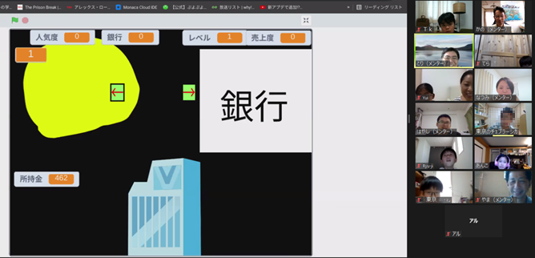

第9回オンライン開催報告（2021-08-08）
リミックス「みんなの夏休み 海のいきもの」がScratch共通テーマ
ニンジャ７名と大学生から社会人のメンター５名が参加しました。みんなで一緒に夏を思いながら作品作りを通してプログラミングを学習します。今回もCoderDojoに初めて参加してくれたニンジャ２名！入門ありがとう。
本日の流れ
- 1. モブプロでリミックスのルール確認
- 2. ワークショップは、Scratch共通テーマ、もしくは自分のオリジナル作品の続き
- 3. みんなの成果発表
モブプロでリミックスのルール確認
リミックスは、ある曲を改造して新しい曲を作ること。Scratchの作品も、誰かが共有した作品を元に、改造して新しい作品を生み出すことをリミックスという。リミックスには、原作者の名前と作品名を書き、意味のある改造をすることがルールなので守ること。コメントを書くときは感謝するマナーにも気を使って（ありがとう、いらすとや）。
最初の発表は、制作中のオリジナル作品の構想から
クラウド変数を使って、みんなで一緒にがんばってゴールを目指す。自分で走った距離でスタミナが消費していく。将来はアイテムを増やしたい。水分補給のドリンクとか、なのかな。減ったスタミナを回復するとか？プレゼンを盛り上げてくれるナイスな発表でした！
発表続いて、海のいきものリミックスです
#1. 見つかるなエビって祈りたい
エビが海藻を食べて幸せなとき、近くでエビを狙う魚やイカたちが泳いでいる。しかし、☆星の杖が魚たちを一掃して守ってくれるアニメーション。あ、イカがエビを食べちゃった。長くなりがちな条件のプログラムをがんばって作ってくれました。追加で、自宅でセルフ学習している応援メッセージ付きの音楽も発表してくれました！

#2. 隠しコマンド的な
海のいきものが、それぞれ独特な動作をするアニメ作品。テトラは円を描いて泳ぎ、熱帯魚と赤魚が左右に泳ぎ、ヒトデはマウスの向きに合わせてくるくる向きを変えて、ウニ、動かない？ あ、ウニをマウスでクリックするとプニっってつぶれた表現になる。にぎやかで楽しいです。
#3. Scratch初体験でも
テトラ(青色の小魚)をマウスで誘導して、動いている大王イカに捕まらないように逃げ回って、ゴールまで行けたらクリアです。感想のプレゼンも始めてとは思えないしっかりしたコメントでした。
#4. Scratch本当に2回目?
上を向いている赤魚を左右に操作して、泡をふき出して、イカやウニやテトラに当てるゲーム。まさかの泡を魚に当てるインベーダーゲーム風。これってステージ毎に魚の動きを変えて拡張すると楽しそう。アイディアをリミックスしてみようかな。
#5. みんなの海オリンピック
海のいきものが競争する時事ネタな作品、話題作りがナイスです。競争自体は乱数を使っていて、工夫しているのが、それぞれの選手に異なる特性を付与して違いを表現している。そしてゴールした順番にリストで結果表示。
#6. バトルゲームきた
男の人が元気玉風な青い玉を投げて、大王イカと戦うゲーム。人かイカか、どちらが先に玉を当てられるかを競う。背景には大王イカに負けたダイバーが横たわっているなどゲーム画面のレイアウトもがんばって制作途中。次回のイベントまでに完成目指して制作継続してくれるとうれしいな。
#7. CoderDojoデビュー作
ギャグストーリーを制作中。魚やスター（☆）のキャラクターをマウスでクリックすると、音声合成を使って話をするするアニメーション。ストーリー作りを一生懸命考えてくれました。

延長。オリジナル作品の発表
自分のアイディアで作ったはじめてのオリジナル作品も積極的に発表してくれました。製品を生産して所持金を増やすじっくり生産系ゲーム!?レベルが上がると生産できる製品が増える、増えた所持金は銀行に預けることもできる、多額の所持金を消費するけれど子会社を設立できる、その他にもさまざまなしくみが組み込まれている大作です。複数のパラメータを組み合わせていて計算のしかけがすごい。

発表会を終えて
みんなー、積極的な作品発表をありがとう。メンター一同、思いもよらないアイディアやプログラミングのスキルアップをとても感心していました。次のイベントも遊びに来てねー。

今日使ったリミックス用Scratchはこちら
みんなの夏休み「海のいきもの」